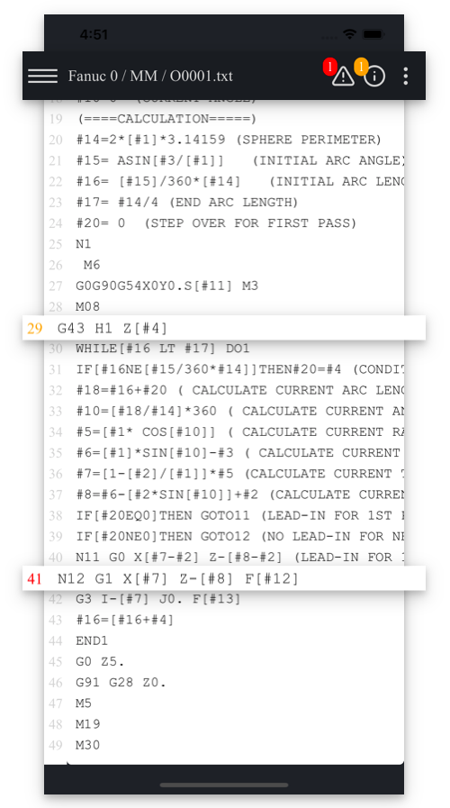
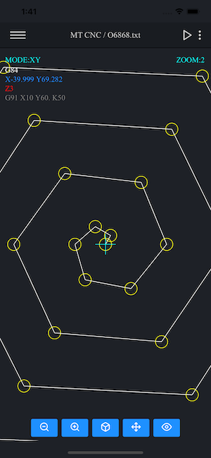
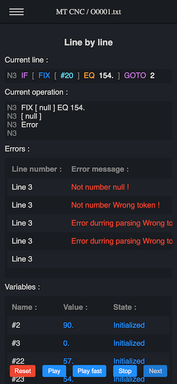
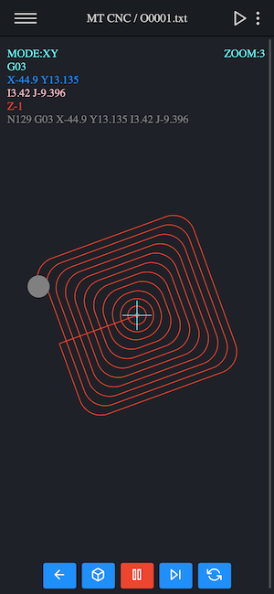
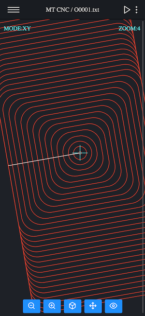

Macro Mill Plus CNC
Macro Mill Plus CNC - the most modern and secure software to speed up your work and improve safety
Purchase
Fanuc
Haas
Siemens
Mazak

About Macro Mill Plus CNC
Macro Mill Plus CNC is the successor to the Macro Terminal CNC. This application was created on the basis of many opinions and observations of the users of the Macro Terminal CNC and others. Unfortunately, the Macro Terminal CNC was not prepared for such a number of improvements and additions and it was necessary to create a new application from scratch.
ReadCompatibility
Macro Terminal CNC is fully compatible with Fanuc Custom Macro B and Haas version of this system which helps to develop CNC macro programming skills. It is also compatible with ISO, so you can program for controllers such as Fanuc, Haas, Mazak, Heidenhain and others that use this standard. Also supports popular Fanuc / Haas G-codes such as: G16 (polar coordinates), G51 (scaling), G52 (shift work offset), G68 (coordinate rotation), G65 / G66 (macro subroutine call), G98 (retract to initial “Z” value level), G99 (retract to “R” value level), repeat canned cycle (L and K) and Haas typical g-codes such as: Haas G70 Bolt Hole Circle, Haas G71 Bolt Hole Arc, Haas G72 Bolt Holes Along an Angle.


Program safer and faster
CNC programming with CNC macros (so called parametric programming with Fanuc Macro B / Haas) is an extremely efficient and flexible way to work on various CNC machines.However, it should be remembered that while CNC macros greatly improve traditional programming, even the slightest mistake can cause the machine to crash or cause injury or death to the operator.By using the Macro Terminal CNC, you can check your code accurately, thanks to the built-in module that displays all logical processes and calculations step by step.
The best option for you
Macro Terminal CNC is the only CNC software in the world that shows all math and logic operations one by one, line by line (known as parse tree). Macro Terminal CNC can be used for traditional programming as well as for parametric programming. Macro Terminal CNC supports G16, G52, G68 and Haas G70 Bolt Hole Circle, Haas G71 Bolt Hole Arc, Haas G72 Bolt Holes Along an Angle. Pay once and enjoy free upgrades!


Contact us
mobilecamcnc@gmail.com
We will answer you within 48hours*
*Excluding weekends and holidays